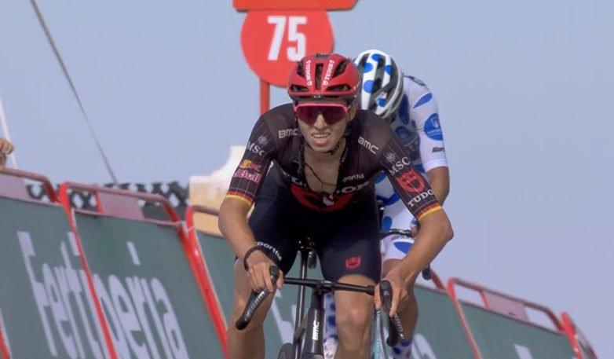
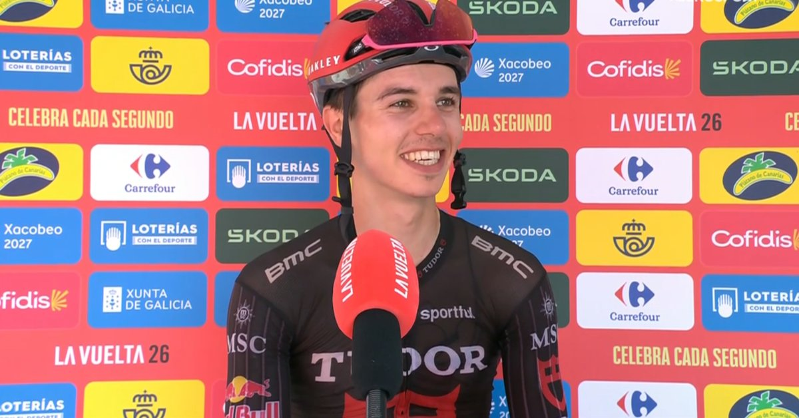

Tudor’s first Grand Tour stage
6 Sep 2026
Stage 14, Sat 5 Sep: Jaén → Sierra de la Pandera, 152.7 km. Brenner 4:15:09. Buitrago +0:01. Rodríguez +0:11.
Sunday 6 Sep 2026
Stage 14, Sat 5 Sep: Jaén → Sierra de la Pandera, 152.7 km summit finish. Winner Marco Brenner (Tudor) 4:15:09. 2. Santiago Buitrago +0:01. 3. Cristián Rodríguez +0:11. 4. Iván Sosa +0:14. 5. Valentin Paret-Peintre +0:22.
Red Mas 49:28:12. Gall +2:06 (now 2nd). Roglič +2:10. Carapaz +4:24. Onley +5:44 (white, +0:30 on Omrzel). Green van Aert 224. Polka Buitrago 69. DNS: Kretschy. DNF: Laporte, Peace, Houle, Labrosse. Tomorrow Stage 15, Sun 6 Sep: Palma del Río → Córdoba, heat-cut to 110.2 km (was 189.7).
Forty-four in the early circus, Vermaerke solo for 50 km, Steinhauser then Aparicio on the steep bits — and still it came down to Brenner vs Buitrago on La Pandera. The German had already crashed and felt sick; he got dropped twice, clawed back twice, and won Tudor’s first Grand Tour stage by a second when the road flattened.
Behind them Mas and Gall finally shook Roglič inside 2 km. Red’s cushion over Gall stays 2:06; the four-time winner slips to third by four seconds. Week two closes on a shortened Córdoba day. Week three still has the chrono and the real mountains.
6 Sep 2026
Stage 14, Sat 5 Sep: Jaén → Sierra de la Pandera, 152.7 km. Brenner 4:15:09. Buitrago +0:01. Rodríguez +0:11.

6 Sep 2026
Buitrago punched on the double-digit ramps; Brenner limited the gaps, followed the last flamme-rouge attack, and outsprinted him when it eased.

6 Sep 2026
Mas and Gall dropped Roglič inside 2 km. Red +2:06. Laporte among the DNFs. Today: heat-shortened 110.2 km into Córdoba.